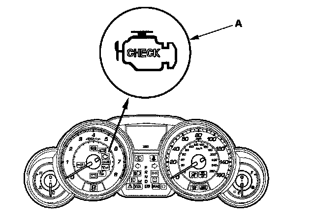
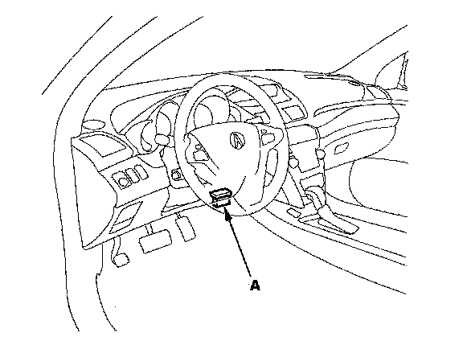

How to Use the HDS (Honda Diagnostic System)
How to Use the HDS (Honda Diagnostic System)If the MIL (malfunction indicator lamp) has come on

1. Start the engine, and check the MIL (A).
NOTE: If the ignition switch is turned ON (II), and the engine is not started, the MIL stays on for 15-20 seconds.

2. If the MIL stays on, connect the HDS to the data link connector (DLC) (A) located under the driver's side of the dashboard.
3. Turn the ignition switch ON (II).
4. Make sure the HDS communicates with the PCM and other vehicle systems. If it does not, go to DLC Circuit Troubleshooting.
5. Check the diagnostic trouble code (DTC) and note it. Also check the freeze data and/or on-board snapshot data, and download any data found. Then refer to the indicated DTCs troubleshooting, and begin the appropriate troubleshooting procedure.
NOTE:
- Freeze data indicates the engine conditions when the first malfunction, misfire, or fuel trim malfunction was detected.
- The HDS can read the DTCs, freeze data, on-board snapshot, current data, and other powertrain control module (PCM) data.
- For specific operations, refer to the user's manual that came with the HDS.
6. If no DTCs are found, go to MIL circuit troubleshooting.
If the MIL did not stay on
If the MIL did not stay on but there is a driveability problem, do the symptom troubleshooting.
If you can't duplicate the DTC
Some of the troubleshooting requires you to reset the PCM and try to duplicate the DTC. If the problem is intermittent and you can't duplicate the code, do not continue through the procedure. To do so will only result in confusion and possibly, a needlessly replaced PCM.